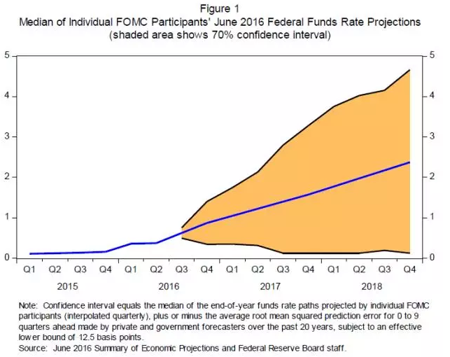

赞助商

Copyright Wehaha.com Rights Reserved. 闽ICP备12016244号 |
Powered by DollarFans.com每次美元一到关键的位置，就会发生奇妙的事情。一而再再而三，这次也不例外。德高望重的费希尔这回更是担心耶伦和杜德利的分量不够，怕搞不定市场，频繁两次出来救场，十分可爱。
这次Jackson Hole会议有两点内容还是值得解读：
1、全新利率路径
耶伦的演讲稿中诠释了新的利率路径，时寒冰老师今早的文章也已经点明，联邦基金利率有70%的几率在2017年底前位于0-3.25%之间，在2018年2月前位于0-4.5%之间。本文最后摘选原文重要的部分章节。
3、关于缩表和资产购买与前瞻指引
美联储加息最担心的几个因素，美元币值过高导致出口减少、通胀降低和引发经济衰退。另一个是债券收益率暴涨，30年债市大泡沫破灭从而引发债务危机。
解决办法：在中性利率接近0的情况下，利用加息预期和25个基点的缓慢渐进式加息来稳定美元币值。经济与美元升值的适应性将随着生产率改善和时间推移逐渐增强，利用经济发展的内生性因素（消费，薪资，房租等）推升通胀。在财政政策的配合下，带动GDP和通胀提升，从而提升中性利率。美联储加息并通过逆回购短期债来抬高短期收益率，使实际利率维持优势吸引资金流入，形成经济良性循环，这样做经济逆风的风险也将最小。
加息的最大风险在于美元流动性紧张可能导致债券收益率暴涨，引发债务危机，尤其是长期债，在美联储资产负债表中最重要的无非是10年期的MBS和绝大多数5年期以上的国债，远期收益率暴涨将轻易引发房地产市场衰退、家庭支出负担和破坏美国的财政平衡。前美联储理事Jeremy Stein及两位哈佛大学同事的最新论文里给出我们想要的答案，而耶伦在她的演讲中予以认可。该研究建议美联储维持资产负债表规模，暂停缩表，必要时刻利用利率前瞻指引和资产购买将远期国债收益率维持在低位。该研究表明即便未来联邦基金利率在3%远低于历史平均水平的情况下，利用前瞻指引和资产购买仍将足以应对未来经济的冲击和衰退。这种人为改变供需的操作可能导致收益率曲线倒挂，但并不一定意味着经济衰退，学术派的耶伦在计量模型的面前显得十分自信。：）
以下是Jackson Hole会议耶伦演讲原文节选：
Current Economic Situation and Outlook
U.S. economic activity continues to expand,led by solid growth in household spending. But business investment remains softand subdued foreign demand and the appreciation of the dollar since mid-2014continue to restrain exports. While economic growth has not been rapid, it hasbeen sufficient to generate further improvement in the labor market. Smoothingthrough the monthly ups and downs, job gains averaged 190,000 per month overthe past three months. Although the unemployment rate has remained fairlysteady this year, near 5 percent, broader measures of labor utilization haveimproved. Inflation has continued to run below the FOMC's objective of 2percent, reflecting in part the transitory effects of earlier declines inenergy and import prices.
当前经济形势与展望
美国家庭支出稳定的增长导致经济持续增长。但是受商业投资保持疲软，外部需求低迷和美元至2014年中期以来的升值影响，出口继续受限。虽然经济增长并不迅猛，但已充分改善就业市场。平滑每月的上下波动，过去三个月每月平均新增19万就业。虽然今年失业率保持稳定在5%，但劳动率得到广泛改善。受早期能源和进口价格影响，通胀继续低于FOMC的2%目标。
Looking ahead, the FOMC expects moderategrowth in real gross domestic product (GDP), additional strengthening in thelabor market, and inflation rising to 2 percent over the next few years. Basedon this economic outlook, the FOMC continues to anticipate that gradualincreases in the federal funds rate will be appropriate over time to achieveand sustain employment and inflation near our statutory objectives. Indeed, inlight of the continued solid performance of the labor market and our outlookfor economic activity and inflation, I believe the case for an increase in thefederal funds rate has strengthened in recent months. Of course, our decisionsalways depend on the degree to which incoming data continues to confirm theCommittee's outlook.
展望未来，FOMC预期真实GDP稳健增长，进一步加强劳动力市场，通胀在未来数年内增长至2%。基于经济前景，FOMC继续采取渐进式加息（gradualincreases in the federal funds rate）以实现和维持我们法定的就业和通胀目标是合适的。实际上，根据劳动力市场的持续稳定增长以及经济和通胀展望，我相信最近几个月里加息一次的可能已经加大。当然，我们的决定总是取决于未来数据对我们展望的确认。
And, as ever, the economic outlook isuncertain, and so monetary policy is not on a preset course. Our ability topredict how the federal funds rate will evolve over time is quite limitedbecause monetary policy will need to respond to whatever disturbances maybuffet the economy. In addition, the level of short-term interest ratesconsistent with the dual mandate varies over time in response to shifts inunderlying economic conditions that are often evident only in hindsight. Forthese reasons, the range of reasonably likely outcomes for the federal fundsrate is quite wide--a point illustrated by figure 1 in your handout.
同时，经济展望总是不确定的，所以货币政策不能设置预定路径。随着时间推移，我们预测联邦基金利率的能力十分有限，因为货币政策需要对任何经济干扰因素做出及时调整，尤其是短期利率总是依据经济条件变化而变化，所以联邦基金利率的合理范围是非常宽的。请参照下图图表1：

The line in the center is the median pathfor the federal funds rate based on the FOMC's Summary of Economic Projectionsin June.1 The shaded region, which is based on the historical accuracy ofprivate and government forecasters, shows a 70 percent probability that thefederal funds rate will be between 0 and 3-1/4 percent at the end of next yearand between 0 and 4-1/2 percent at the end of 2018.2 The reason for the widerange is that the economy is frequently buffeted by shocks and thus rarelyevolves as predicted. When shocks occur and the economic outlook changes,monetary policy needs to adjust. What we do know, however, is that we want apolicy toolkit that will allow us to respond to a wide range of possibleconditions.
中间的蓝线是依据委员会6月1号的经济摘要而画出的联邦基金利率路径中值。阴影区间，是基于私人和政府的历史预测，显示联邦基金利率有70%的几率在2017年底前位于0-3.25%之间，在2018年2月前位于0-4.5%之间。宽泛的利率区间是由不可预测的频繁性的经济冲击所决定的。当冲击产生和经济前景发生改变，货币政策就需要做出调整。我们确定的是在这种可能下我们需要一个可行的政策工具箱做出回应。
Two other major additions to the Fed'stoolkit were large-scale asset purchases and increasingly explicit forwardguidance.11 Both were used to provide additional monetary policy accommodationafter short-term interest rates fell close to zero. Our purchases of Treasuryand mortgage-related securities in the open market pushed down longer-termborrowing rates for millions of American families and businesses. Extendedforward rate guidance--announcing that we intended to keep short-term interestrates lower for longer than might have otherwise been expected--also putsignificant downward pressure on longer-term borrowing rates, as did guidanceregarding the size and scope of our asset purchases.
其中两个主要增加的工具是大规模资产购买计划和详尽的前瞻指引。这两项工具都是当短期利率接近0时货币政策的补充。我们在公开市场购买国债和相关抵押证券为无数的美国家庭和商业降低了长期借贷成本。利率前瞻指引---预示着我们将保持短期利率在更低和更久的水平---同时也对长期借贷利率产生向下的压力；而资产购买规模和范围的前瞻指引也将如此。
In light of theslowness of the economic recovery, some have questioned the effectiveness ofasset purchases and extended forward rate guidance. But this criticism fails toconsider the unusual headwinds the economy faced after the crisis. Those headwindsincluded substantial household and business deleveraging, unfavorable demandshocks from abroad, a period of contractionary fiscal policy, and unusuallytight credit, especially for housing. Studies have found that our assetpurchases and extended forward rate guidance put appreciable downward pressureon long-term interest rates and, as a result, helped spur growth in demand forgoods and services, lower the unemployment rate, and prevent inflation fromfalling further below our 2 percent objective.12
鉴于经济复苏受阻，一些人质疑资产购买和利率前瞻指引的有效性。这些人没有考虑到经济在危机后遭遇了不寻常的逆风。这些逆风包括家庭和企业的去杠杆，外部低迷的需求，紧缩的财政政策以及不寻常的信贷紧缩，尤其是房地产。有研究表明我们的前瞻指引和资产购买计划对长期利率产生了明显的下行压力，这有利于商品和服务的需求增长，降低失业率，阻止通胀进一步下跌低于我们2%的目标。
The FOMC considered removing accommodationby first reducing our asset holdings (including through asset sales) andraising the federal funds rate only after our balance sheet had contractedsubstantially. But we decided against this approach because our ability topredict the effects of changes in the balance sheet on the economy is less thanthat associated with changes in the federal funds rate. Excessive inflationarypressures could arise if assets were sold too slowly. Conversely, financialmarkets and the economy could potentially be destabilized if assets were soldtoo aggressively. Given the uncertainty and potential costs associated withlarge-scale asset sales, the FOMC instead decided to begin removing monetary policyaccommodation primarily by adjusting short-term interest ratesrather than by actively managing its asset holdings.13 That strategy--raisingshort-term interest rates once the recovery was sufficiently advanced whilemaintaining a relatively large balance sheet and plentiful bankreserves--depended on our ability to pay interest on excess reserves.
FOMC曾经考虑先缩减资产负债表规模（包括资产出售）同时在资产负债表大幅缩减后再加息。我们否决了这个方法，因为我们在预测资产负债表变化对经济产生影响的能力上要小于对联邦基金利率的预测。如果资产出售太慢有可能导致通胀过热。相反，过于激进的出售也可能导致金融市场和经济潜在的不稳定。依据大规模资产出售所产生的潜在成本和不确定性，FOMC决定用调整短期利率替代资产出售来缩减货币刺激。我们的策略是当经济进一步显著复苏后提升短期利率同时维持相对规模的资产负债表和充裕的银行准备金，其水平取决于我们支付超额准备金利息的能力。
A recent paper takes a different approachto assessing the FOMC's ability to respond to future recessions by usingsimulations of the FRB/US model.19 This analysis begins by asking how theeconomy would respond to a set of highly adverse shocks if policymakersfollowed a fairly aggressive policy rule, hypothetically assuming that they cancut the federal funds rate without limit.20 It then imposes the zero lowerbound and asks whether some combination of forward guidance and asset purchaseswould be sufficient to generate economic conditions at least as good as thosethat occur under the hypothetical unconstrained policy. In general, the studyconcludes that, even if the average level of the federal funds rate in thefuture is only 3 percent, these new tools should be sufficient unless therecession were to be unusually severe and persistent.
近期有一份使用FRB/US模型（该模型为美联储自创内部使用模型）的论文在评估FOMC对未来衰退的应变能力提供了一种不同办法。该论文首先询问过于激进的货币政策将对经济产生什么不利冲击，该论文假设可以无限制的降低联邦基金利率，同时考虑在负利率债券的基础上需要选择怎样的资产购买计划和前瞻指引组合才足以应对经济的不利冲击。总体来说，这份研究表明，即便联邦基金利率在未来平均只有3%左右的情况下，这些新的工具仍将发挥充分作用，除非发生非常严峻和持续的衰退。
Conclusion
Although fiscal policies and structural reforms can play an important role instrengthening the U.S. economy, my primary message today is that I expectmonetary policy will continue to play a vital part in promoting a stable andhealthy economy. New policy tools, which helped the Federal Reserve respond tothe financial crisis and Great Recession, are likely to remain useful indealing with future downturns. Additional tools may be needed and will bethe subject of research and debate. But even if average interestrates remain lower than in the past, I believe that monetary policy will, undermost conditions, be able to respond effectively.
结语
虽然财政政策和结构性改革在强化美国经济上扮演着重要角色，但我今天最想传达的信息是我期望货币政策能够继续在促进经济的健康稳定上发挥至关重要的作用。新的政策工具将帮助联储应对金融危机和衰退，额外的工具也许在研究和讨论下需要。但我相信即便在平均利率水平低于以往的情况下，货币政策将在大多数情况下做出有效回应。
（翻译水平有限请见谅，欢迎指正）
原文链接：
http://www.federalreserve.gov/newsevents/speech/yellen20160826a.htm


Copyright Wehaha.com Rights Reserved. 闽ICP备12016244号 |
Powered by DollarFans.com
发表评论